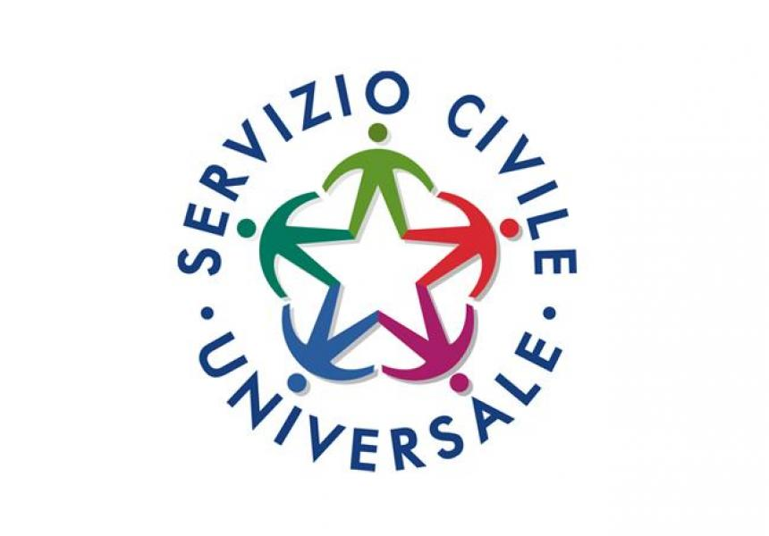

Certificazione ed esperienze lavorative

Servizio Civile Universale
Presso un Patronato locale, ho vissuto un anno intenso a diretto contatto con le persone. Accogliere il pubblico mi ha insegnato che dietro ogni pratica amministrativa c’è una storia e una necessità reale. Ho gestito l'accoglienza, fornito informazioni e supportato gli utenti nella navigazione dei servizi digitali: un'esperienza che mi ha arricchito profondamente a livello umano e che ha consolidato la mia capacità di ascolto e di gestione dello stress.
Ho imparato a mantenere la calma e la professionalità anche nelle giornate di grande affluenza, garantendo a ogni utente un servizio attento e puntuale. Ogni cittadino portava una sfida diversa; questo mi ha insegnato a trovare soluzioni rapide ed efficaci, collaborando con il team del Patronato.
C1 di inglese
Competenza avanzata nella lingua straniera.
Eipass 7 moduli standard
Certificazione internazionale di alfabetizzazione digitale.
Corso di dattilografia
Perfezionamento della velocità e precisione nella scrittura digitale.